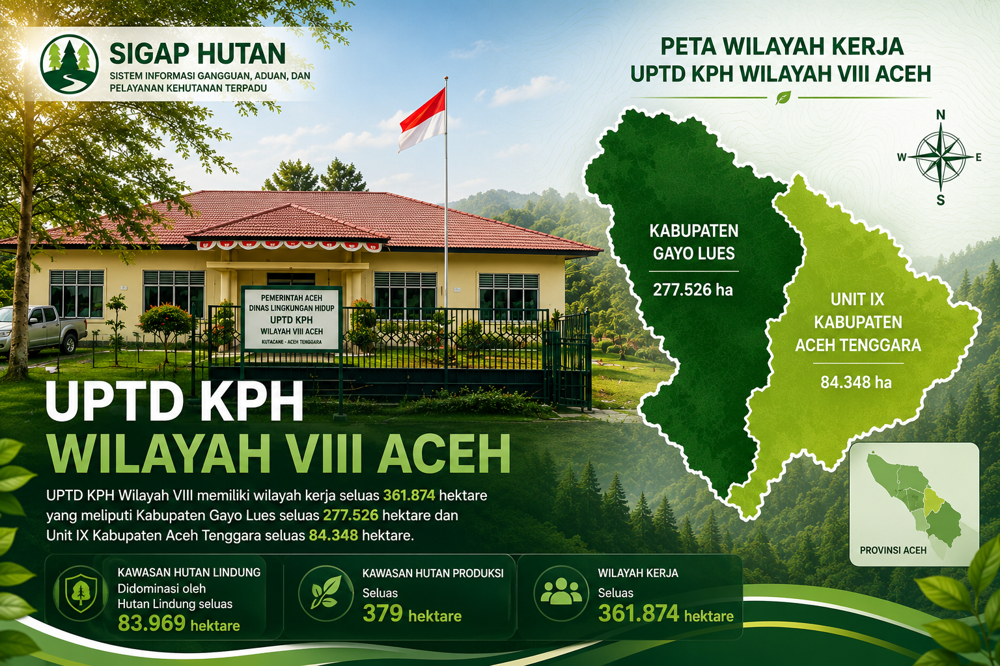
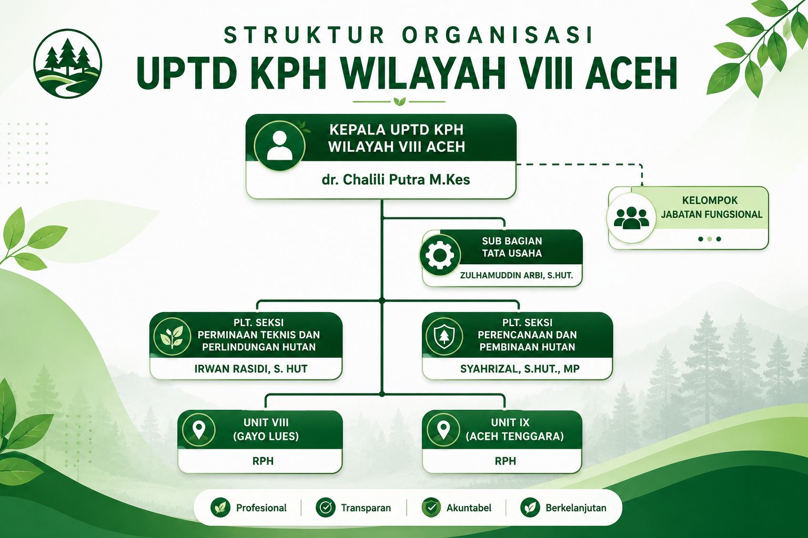

UPTD Kesatuan Pengelolaan Hutan (KPH) Wilayah VIII Aceh merupakan Unit Pelaksana Teknis Daerah di bawah Dinas Lingkungan Hidup dan Kehutanan Aceh yang bertugas melaksanakan pengelolaan kawasan hutan secara lestari, perlindungan hutan, pembinaan masyarakat, serta pelayanan publik di bidang kehutanan.
UPTD KPH Wilayah VIII Aceh memiliki wilayah kerja pada Kabupaten Gayo Lues dan Kabupaten Aceh Tenggara dengan luas kawasan mencapai 361.874 hektare.
Perjalanan terbentuknya UPTD KPH Wilayah VIII Aceh
UPTD KPH Wilayah VIII Aceh dibentuk berdasarkan Peraturan Gubernur Aceh Nomor 1 Tahun 2024 tentang Organisasi dan Tata Kerja Unit Pelaksana Teknis Daerah pada Dinas Lingkungan Hidup dan Kehutanan Aceh.
Sebelumnya wilayah kerja ini merupakan bagian dari UPTD KPH Wilayah V berdasarkan Pergub Aceh Nomor 46 Tahun 2018. Perubahan tersebut dilakukan untuk meningkatkan efektivitas pengelolaan kawasan hutan di Kabupaten Gayo Lues dan Kabupaten Aceh Tenggara.
Menjadi pengelola hutan yang profesional, berkelanjutan, dan berorientasi pada pelayanan publik guna mewujudkan kelestarian hutan serta meningkatkan kesejahteraan masyarakat.
Kabupaten Gayo Lues
Kabupaten Aceh Tenggara

UPTD KPH Wilayah VIII Aceh didukung oleh ASN dan PPPK yang ditempatkan pada tiga bagian utama.
Melaksanakan perlindungan dan pengamanan kawasan hutan serta penanganan gangguan kehutanan.
Melaksanakan penyusunan rencana pengelolaan, pembinaan, monitoring dan evaluasi kehutanan.
Melaksanakan administrasi umum, kepegawaian, keuangan, persuratan dan pelayanan administrasi.